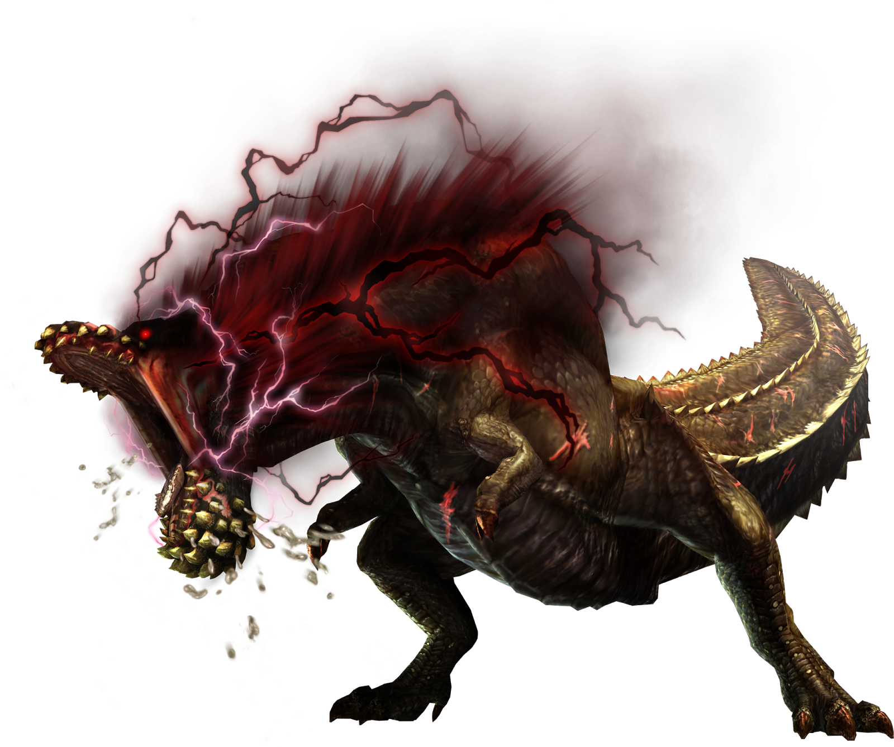
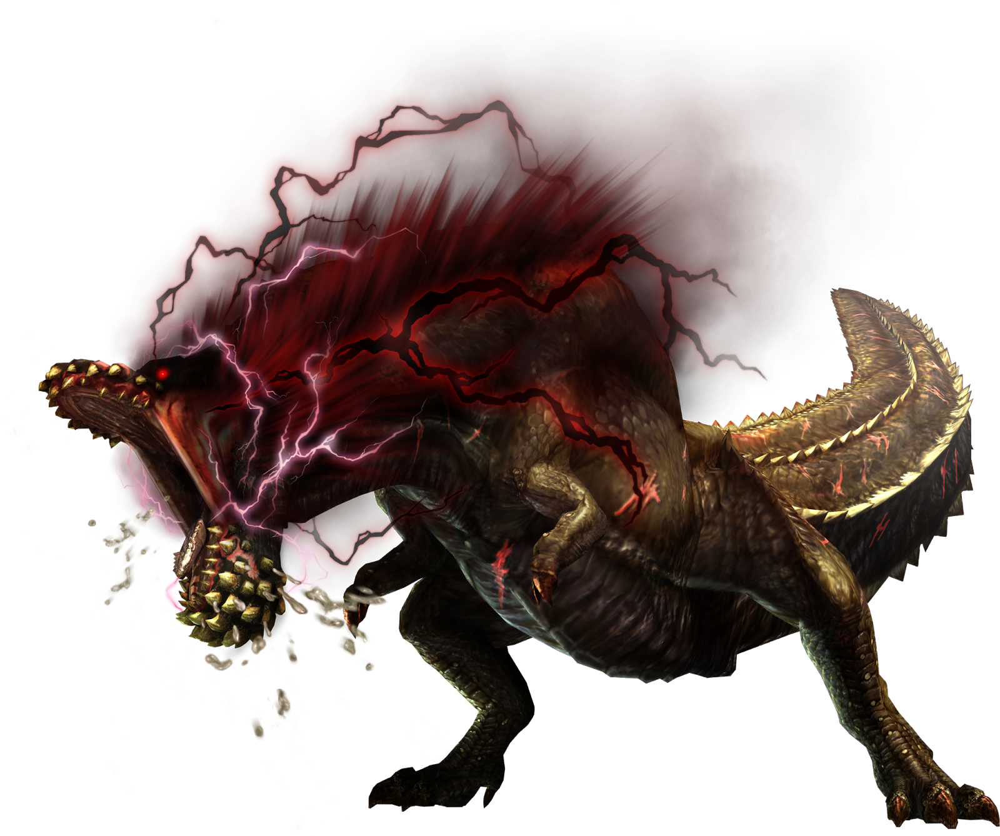

Greetings Hunters! There has been a disturbance in Elder's Recess where a DevilJho is spotted fighting a Nergigante. Elder's Recess is a home of 4 Elder Dragons of Astera and DevilJho shouldn't be there! Capture DevilJho to bring back peace to Elder's Recess.
Nergigante is a dragon with a bristly appearance. It is covered in spikes that constantly regrow as they're broken off. It has two massive horns similar to a bull. The monster's hide is primarily black with purple and orange accents. Nergigante is constantly regenerating its skin as it attacks and is struck by hunters. It will slowly grow white spikes on certain body parts, which harden over time.
DevilJho is a very large, bipedal Brute Wyvern characterized by its uniform forest green coloration and muscular upper body. Its thick hide is littered with short, jagged spines that reach a maximum height along the back and tail. Be careful when he's enraged!